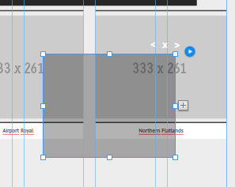

Flatblack Theme
Flatblack is an one-page portfolio theme designed in Muse. Images, colors, textures, content or all very easy to customize without writing any code. Visit the Adobe website to learn more about Muse.
How to use an Adobe Muse Template
- Customise this theme in Adobe Muse.
- Publish your website
- Click Publish
- Export as HTML
- Upload to FTP Host
Fonts
All fonts are implemented or can be easy added as Web Fonts in Adobe Muse.
Main Slider
How to place images inside the main slider?
- Double click on the grey placeholder image inside the slider. Beware there is a dark transparant layer on top of the lightbox.
- Delete this grey placeholder image
- Simple drag & drop your image inside the slider. Or click on the icon that appears on the right corner to add images.
Portfolio
How to place your images inside the portfolio?
- Move the Lightbox out of the way.
- Replace the placeholder thumbnails by your images.
- Move the lightbox back in place, right click on the lightbox and arrange to front.
- Select only the area with the big image in it and move it back out of the way without moving the navigation of the lightbox.
- Make sure te black overlay trigger boxes make a perfect fit over the right thumbnails.
- You can go to the next or previous trigger box by clicking on the arrows.
- Delete the big image inside the lightbox and dragg your image inside the lightbox.
How to add more images?
- Select only the area with the big image in it and move it out of the way without moving the navigation of the lightbox.
- Click on the + symbol next to the last red trigger box to add a new black trigger box.
- A new black trigger box will appear
- Move this trigger where you want it and place a thumbnail under this trigger box.
Credits
- Images:
- Icons: